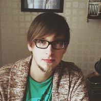

Presentation
Hej!
Mitt namn är Mathias Lundberg. För närvarande studerar jag Webbprogrammering på Linnéuniversitet i Kalmar.
Datorer och spel i alla former har så länge jag kan minnas varit ett stort intresse. Mina intressen är grunden och det som format mig till den jag är idag.
Jag spelade väldigt mycket PC spel när jag var yngre. Detta ledde mig till en del tankar på att göra egna spel. Men tänkte jag lite längre så förstod jag att detta är för svårt och ingenting jag klarar av. Så tanken på att göra spel fasades ut.
Med tiden som gick så blev intresset också starkare och starkare. Jag hittade webbsajter där man kunde ladda ned mindre gratisspel av självständiga utvecklare. I samma veva så började jag intressera mig för skaparna bakom dessa spelen.
Jag började följa spelutvecklare på Twitter. Mest för att få uppdateringar om eventuella nya spel under utveckling. Men, jag upptäckte att dessa mindre utvecklare gärna delade med sig av sina egna erfarenheter att leva som självständig utvecklare och designer. Detta genom inspelade föreläsningar på diverse konferanser.
Tankarna på att utveckla spel började dyka upp igen. Jag hittade en spelmotor som inte kräver kunskaper i programmering sedan tidigare, utan man utvecklar istället i en gränssnitt baserat miljö. Eftersom jag inte hade några kunskaper inom programmering sedan tidigare så tyckte jag att detta passade mig bra. Jag började experimentera och försöka lära mig programmet och de olika funktionerna. Till slut hade jag lärt mig så pass mycket att jag hade kunskaper att utveckla spel i detta.
Ganska snart lyckades jag slutföra ett spelprojekt som släpptes till PC och HTML5 spel. Detta på en webbsajt som koncentrerar sig på just gratis indie spel. Det blev en riktig succe. Spelet hamnade på webbsajtens framsida, kommentarer stormade in, folk gav högt betyg och YouTubers spelade in när dem spelade. All den positiva feedback som jag har fått från människor runt om världen, har lett mig till detta.
Vare sig det handlar om spel, applikationer, webben, spel och/eller applikationer på webben så är det detta jag vill göra. Jag vill bli en utvecklare på riktigt, utan genvägar eller begränsningar. Och jag ser webben som en framtidsplatform.
Utbildning
- Gymnasiet
- Industriprogrammet
- Efter gymnasial
- Möbel & iredningssnickeri